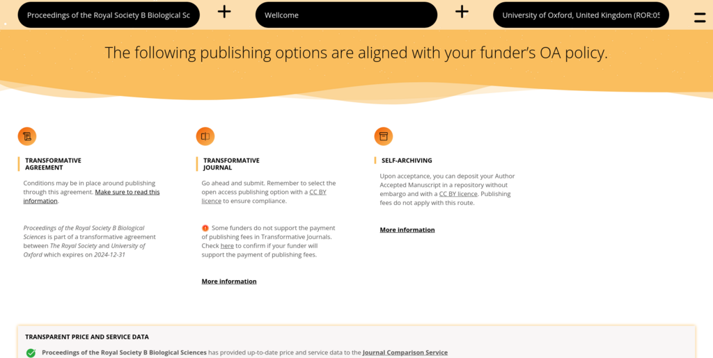

Journal Checker Tool

cOAlition S, a consortium of 25+ funders, as put together an ambitious plan to improve the state of Open Access and encourage more and more publishers to support that route. Cottage Labs provides several services to the consortium, including this tool to allow authors to verify the compliance of their preferred publishing routes.
Challenge
cOAlition S's Plan S requires funded authors to publish under certain conditions for their grant funding to be valid. To enable authors to check that their preferred publishing route is compliant, or to support them in finding alternative routes, the coalition wanted a tool which would survey the known information about journals in multiple sources and deliver advice on the publishing options available.
